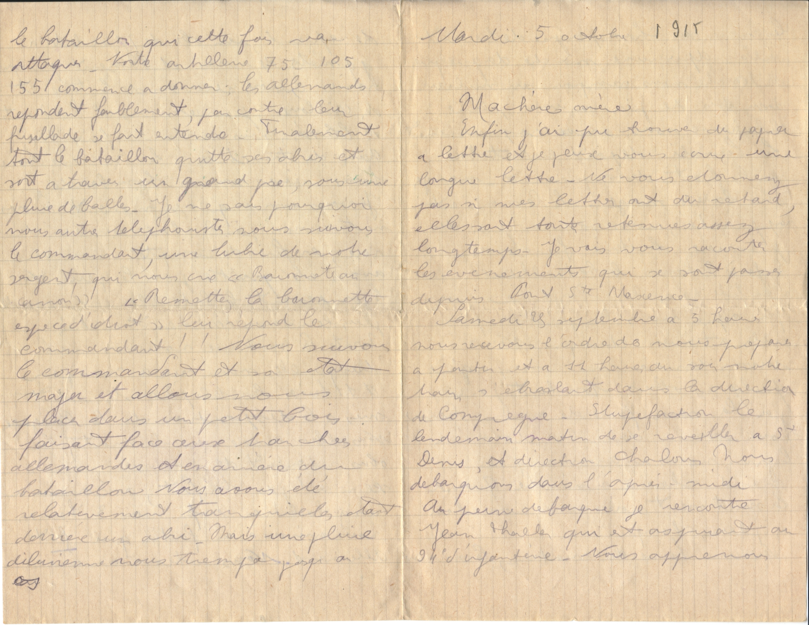
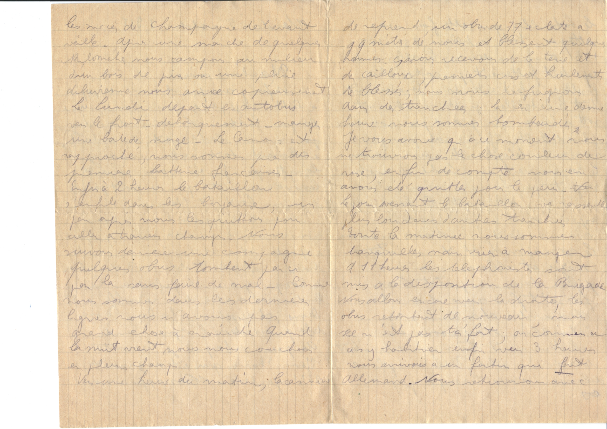
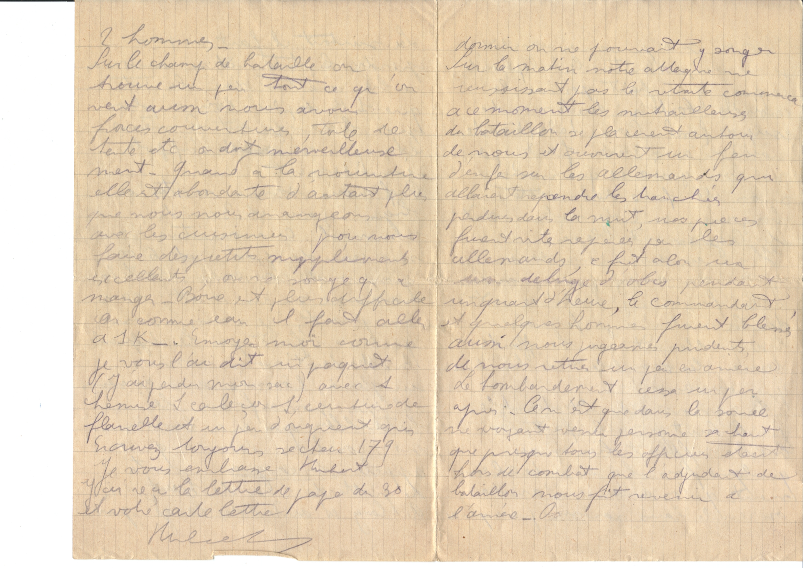
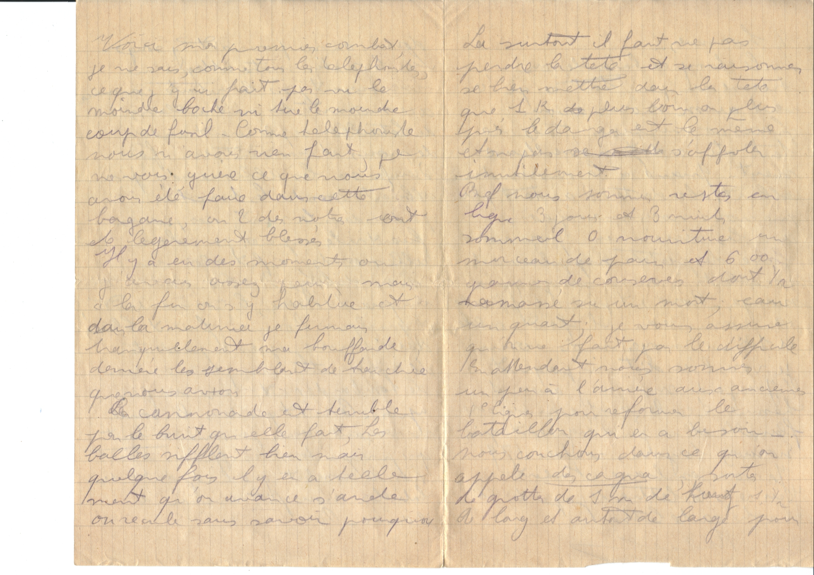

Mardi 5 Oct 1915
Ma chère Mère
Enfin j'ai pu trouver du papier à lettre et je peux vous écrire une longue lettre.
Ne vous étonnez pas si mes lettres ont du retard, elles sont toutes retenues assez longtemps.
Je vais vous raconter les évènements qui se sont passés depuis Pont Ste Maxence.
Samedi 29 Septembre à 5 H, nous recevons l'ordre de nous préparer à partir, et à 11 heures du soir notre troupe
s'ébranlait dans la direction de Compiègne. Stupéfaction le lendemain de se retouver à Saint Denis,
et direction Châlons.
Nous débarquons dans l'après-midi.
À peine débarqué, je rencontre Jean Thaler qui est aspirant au 9ie d'infanterie. Nous apprenons …

les succès de Champagne de l'avant-veille.
Après une marche de quelques kilométres, nous campons au milieu d'un bois de pin, où une pluie
diluvienne nous arrose copieusement. Le lundi départ en autobus sur le front – débarquement – manger une boite de …
Le canon s'est rapproché, nous sommes près des premières batteries françaises. Enfin à 2 heures,
le bataillon s'enfile dans les b..., un peu après nous les quittons pour aller à travers champs.
Nous suivons derrière une campagne, quelques obus tombent par-ci par-là sans faire de mal.
Comme nous sommes dans les dernières lignes, nous n'avons pas grand chose à craindre.
Quand la nuit vient, nous nous couchons en plein champ.
Vers une heure du matin, la cannonière ? …
… de reprend, un obus de 77 éclate à quelques métres de nous, et blessent quelques hommes; nous recevons de la
terre et des cailloux, premiers cris et hurlements des blessés; nous nous refugions dans des tranchées.
Là, en une demi-heure, nous sommes bombardés.
Je vous avoue qu'à ce moment, nous ne trouvons pas la chose couleur de rose, en fin de compte, nous en avons été
quitte pour la peur. Le jour venant, le bataillon va rassembler plus loin dans d'autres tranchées.
Toute la matinée, nous sommes tranquilles, mais rien à manger.
A 11 heures, les téléphonistes sont mis à la disposition de la Brigade. Nous allons encore vers la droite,
les obus retombent de nouveau, mais ce n'est pas très fort; on commence à s'y habituer enfin vers 3 heures
nous arrivons à un fortin qui fût allemand. Nous retrouvons avec …
… le bataillon qui cette fois va attaquer. Notre artillerie 75-105-155 commence à donner. Les allemands répondent
faiblement, par contre leur fusillade se fait entendre. Finalement tout le bataillon quitte ses abris et
sort à travers un grand pré, sous une pluie de balles. Je ne sais pourquoi, nous autres téléphonistes,
nous suivons le commandant, une lubie de notre sergent, qui nous crie “Baïonnette au canon”
“Remettez la baïonnette, espèce d'idiot” lui répond le commandant ! Nous suivons le commandant et
son état major et allons nous placer dans un petit bois faisant face aux tranchées allemandes et en arrière
du bataillon. Nous avons été relativement tranquilles étant derrière un abri.
Mais une pluie diluvienne nous trempa jusqu'au os.

… dormir on ne pouvait y songer. Sur le matin notre attaque ne réussissait pas la retraite commença à ce
moment les mitrailleuses du bataillon se placèrent autour de nous et ouvrirent un feu d'enfer sur les
allemands qui allaient reprendre les tranchées perdues dans la nuit, nous … furent vite repérées par les
allemends ce fût alors un déluge d'obus, pendant un quart d'heure, le commandant et quelques hommes furent
blessés, aussi nous jugeâmes prudents de nous retirer un peu en arrière. Le bombardement cessa un peu après.
Ce n'est que dans la soirée, ne voyant venir personne sachant que presque tous les officiers étaient hors du
combat que l'adjudant du bataillon nous fit revenir à l'arrière...

… Voici mon premier combat, je ne sais, comme tous les téléphonistes, ce que j'y ai fait, pas vu le moindre boche,
ni tiré le moindre coup de fusil. Comme téléphoniste nous n'avons rien fait, je ne vois guère ce que nous avons été
faire dans cette bagarre, où 2 des notres ont été légèrement blessés.
Il y a des moments où j'avais assez peur, mais à la fin on s'y habitue et dans la matinée, je fumais tranquillement
ma bouffarde derrière les semblants de tranchées que nous avons.
La cannonade est terrible par le bruit qu'elle fait, les balles sifflent bien mais quelques fois il y en a tellement
qu'on avance s'arrête ou recule sans savoir pourquoi...
Là surtout, il faut ne pas perdre la tête, et se raisonner se bien mettre dans la tête que 1 km plus loin
ou plus près le danger est le même et ne pas s'affoler inutilement. Bref nous sommes restés en ligne 3 jours et
3 nuits, sommeil 0 ,nourriture un morceau de pain et 600 grammes de conserves dont 1 (?) ramassé sur un mort,
eau un quart. Je vous assure qu'on ne fait pas le difficile. En attendant nous sommes un peu à l'arrière aux
anciennes 1ere ligne pour reformer le bataillon qui en a besoin. Nous couchons dans ce qu'on appelle des cagna,
sortes de grottes de 1 m de haut et 1 ½ de long et autant de large pour …
… 2 hommes.
Sur le champ de bataille on trouve un peu tout ce qu'on veut, aussi nous avons force couvertures, toile de tente etc
on dort merveilleusement. Quand à la nourriture elle est abondante d'autant plus que nous nous arrangeons avec
les cuisiniers pour nous faire des petits suppléments excellents on ne songe qu'à manger. Boire est plus difficile
car comme eau il faut aller à 1 Km.
Envoyezmoi comme je vous l'ai dit un paquet (j'ai perdu mon sac) avec 1 chemise, 1 caleçon 1 ceinture de flanelle,
et un peu d'onguent gris. Écrivez toujours secteur 179. Je vous embrasse Hubert.
J'ai reçu la lettre de papa du 30, et votre carte lettre Hubert